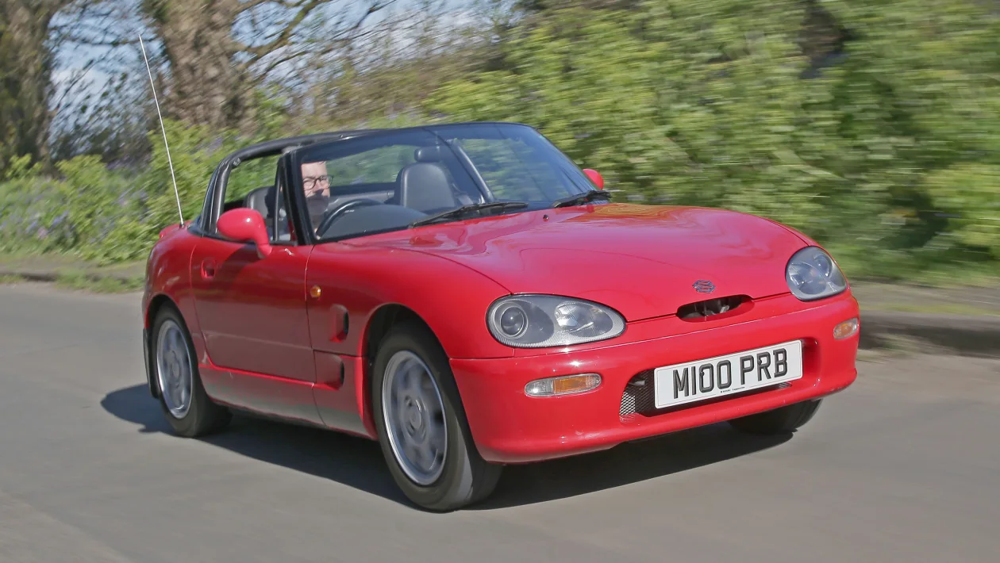

dito makikita ang kotse na nais ni Rexandra
Ito ang gustong kotse ni Rexandra

Suzuki cappuccino
The Suzuki Cappuccino is a small, sporty two-seater convertible produced by Suzuki in the early 1990s (1991–1998). It is part of Japan’s kei car category, meaning it is very compact and lightweight, designed to meet strict size and engine restrictions.